Grid
Conceptos
Grid Container
-
El nombre Grid proviene de la "grilla", la cual es: un sistema organizador del espacio gráfico que permite la estructuración, el orden y la disposición de distintos elementos que componen una pieza. Al basarse en este formato los elementos grid poseen una gran variedad de características únicas.
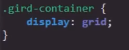
La estructura de un grid container está compuesta por diversas columnas y filas de celdas, similar a una tabla.
Ejemplo
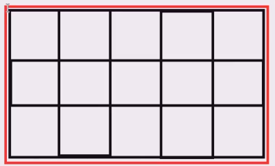
Nota: Al igual que Flexbox, los contenedores grid se comportan como elementos de bloque para los elementos externos.
Grid Cell
-
Las Grid celdas se tratan de todos los recuadros que seccionan el contenedor. En un elemento Grid puede ser definido el número de filas y de columnas según sea necesario; por defecto, la propiedad display: grid; genera una única columna y no genera ninguna fila. Como es obvio, esto puede ser modificado a conveniencia del diseño.
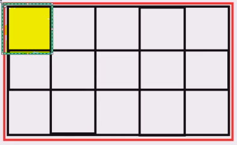
Grid Item
-
Al igual que el Flexbox, todos los elementos hijos que se encuentran dentro del contenedor son llamados items; es decir, un grid item es todo elemento que se asigne en el interior del contenedor grid. Por lo tanto, la cantidad máxima o mínima de grid item es definida por el desarrollador.
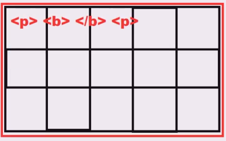
Nota: Al igual que en Flexbox, en grid los "items" están limitados únicamente a los elementos hijos directos; por lo tanto, un elemento que se encuentre dentro de un item ya no es considerado como uno.
Grid Tracks
-
Se tratan de conjuntos de grid cell, y se dividen en dos grupos:
-
Filas
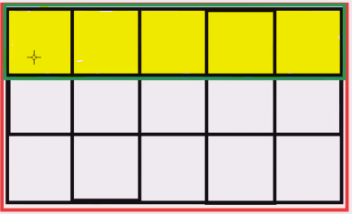
-
Columnas
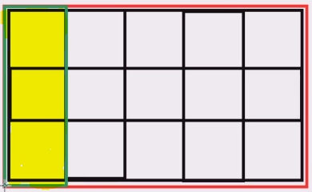
y, por su parte, para saber el número de grid tracks que posee un contenedor simplemente es necesario sumar las filas y las columnas del elemento en cuestión; por lo tanto, cada columna y cada fila se define como un grid track.
Grid Area
-
Las grid area son conjuntos de celdas consecutivas que el desarrollador puede definir, ya que estas no están estructuradas; por lo tanto, cualquier conjunto de celdas consecutivas puede ser definido como un grid area, esto incluye a uno o más grid tracks.
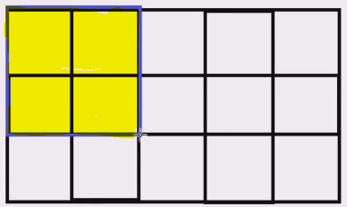
Nota: también se podría definir una sola celda como un área, pero esto carece de sentido; lo ideal es que un grid area posea al menos dos celdas.
Nota: Las grid areas tienen que ser celdas consecutivas vertical u horizontalmente; no pueden ser en diagonal ni en vertical y horizontal en la misma área.
Grid Line
-
Se refiere a las líneas divisoras de las columnas y las celdas, por lo tanto se dividen en dos grupos:
A su vez, estas se empiezan a enumerar desde la línea borde izquierda para las columnas y desde la línea borde superior para las filas, de la siguiente manera:
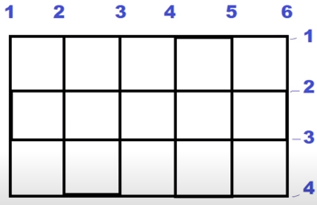
Propiedades
Propiedades a aplicar en el Contenedor:
Grid Template
-
Esta primera propiedad cuenta con dos variaciones: grid-template-rows y grid-template-columns. En ambos casos la función es la misma: definir el número de filas y de columnas respectivamente, de la siguiente forma:
Código
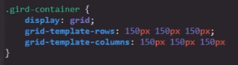
Resultado
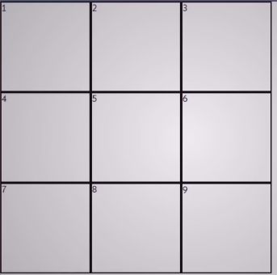
De este modo es como se asigna el número de filas y columnas que poseerá el contenedor a la vez que se definen las dimensiones de estas. De hecho, para definir las dimensiones de las columnas y filas se puede aplicar cualquiera de las diversas unidades de medida CSS.
Medida "fr"
Los elementos grid cuentan con un valor especial abreviado como "fr" (fractional unit), y su efecto es similar al de la propiedad flex-grow, en la cual se define que todo el espacio sobrante se asigne al elemento en el que esta se aplique. Del mismo modo, al utilizar este valor para definir las dimensiones de alguna columna o fila, esta dispondrá del espacio disponible o se reducirá según sea necesario.
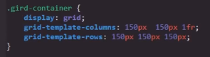
Nota: la medida "fr" se puede aplicar a todas las columnas y filas si es necesario.
Valor Repeat
Se trata de una función que se puede emplear a la hora de definir el valor de estas propiedades. Su función es la de simplificar la declaración de las columnas y filas al definirlas una única vez en lugar de repetir las pautas numerosas veces.
Su sintaxis consta de la palabra clave repeat y, dentro de paréntesis, el número de repeticiones a realizar seguido de las pautas de las filas o de las columnas, como se puede ver en el siguiente ejemplo:
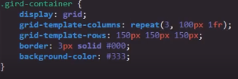
De esta forma se logra que la función ejecute las pautas el número de veces designado; en este caso: que se cree una columna de 100px seguida de una de 1fr tres veces.
Nota: Esta función es muy útil en aquellos casos en los que es necesario crear numerosas filas o columnas.
Nota: grid-template-columns y grid-template-rows también poseen valores dinámicos los cuales son mencionados más adelante.
Grid-gap
-
Esta segunda propiedad también posee dos variantes: grid-row-gap y grid-column-gap. Tal como su nombre lo indica, la diferencia entre ambas es que una aplica su efecto a las columnas y otra a las filas; fuera de esto el efecto es el mismo. El efecto de esta propiedad es aplicar un tipo de margen entre las celdas del contenedor de la siguiente forma:
Código
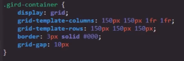
Resultado
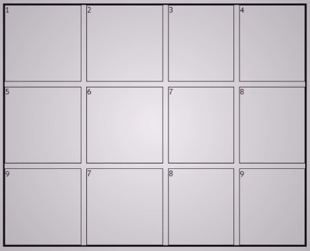
Tal como se puede ver en el ejemplo, en este código se utilizó la propiedad de abreviatura grid-gap, la cual simplemente generaliza el efecto tanto para las columnas como para las filas; sin embargo, se pueden utilizar las propiedades grid-row-gap y grid-column-gap de la misma forma, claro que cada una se limita a aplicar los márgenes a las filas y a las columnas respectivamente.
Nota: Tal como se puede apreciar en el ejemplo, esta propiedad no distancia las celdas de los bordes del contenedor; su efecto únicamente se aplica entre celdas.
Grid-column y Grid-row
-
Se trata de dos propiedades con efectos muy similares entre sí llamadas grid-column y grid-row. La función de ambas es definir el espacio que ocupará una celda en la grilla, para lo cual estas propiedades se basan en las grid lines; es decir, se basan en las diferentes líneas que conforman la grilla, tal como se puede ver en este ejemplo. Por lo tanto, el efecto de cada propiedad es:
-
Grid-column: Define en cuáles líneas de columna (líneas verticales) empieza y termina la celda en cuestión; por lo tanto, esta propiedad modifica las dimensiones horizontales de la celda.
-
Grid-row: Define en cuáles líneas de fila (líneas horizontales) empieza y termina la celda en cuestión; por lo tanto, esta propiedad modifica las dimensiones verticales de la celda.
Por lo tanto, se podría decir que estas propiedades modifican la cantidad de casillas que ocupará la celda seleccionada, como en el siguiente ejemplo:
Código
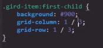
Resultado
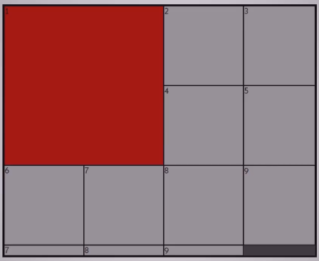
Una característica de las grillas es que pese a que el espacio ocupado por las celdas se modifique, esto solo afecta a las dimensiones de estas; no significa que la celda "absorba" a algún item grid. Estos elementos simplemente proceden a correrse dando espacio a la celda para ocupar el espacio designado, ya sea desplazándose a otra columna o descendiendo a otra fila.
A su vez, tal y como se puede ver en el ejemplo, esta propiedad acepta dos valores numéricos en los cuales el primero representa la numeración de la línea donde comienza la celda, seguida de un "slash (/)" y continuando con el segundo dígito, el cual representa la numeración de la línea donde termina la celda; esto es igual para ambas propiedades.
Es importante no confundir: estos valores numéricos no representan el número de casillas que ocupará la celda, sino en cuáles líneas empieza y termina. Sin embargo, existe una forma de utilizar el número de casillas que se desea utilizar como valor; esto se logra añadiendo la palabra span delante del segundo número. De ese modo, este deja de representar la numeración de la línea y pasa a representar el número de celdas a cubrir de la siguiente forma:
Código
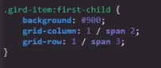
Resultado
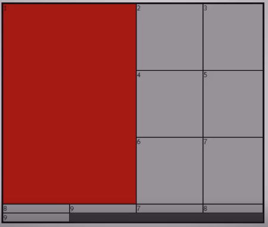
De este modo, la declaración de este ejemplo deja de ser: "empieza en la línea 1 y termina en la 3" y pasa a ser: "empieza en la línea 1 y cubre 3 casillas". Este método puede simplificar bastante más la implementación de esta propiedad.
Variantes
Realmente ambas propiedades se tratan de propiedades de abreviatura, ya que cada una tiene la función de recibir los datos pertinentes a otras dos propiedades de la siguiente forma:
Ejemplo
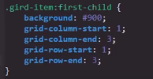
Por lo tanto, utilizar estas propiedades es más óptimo que sus versiones específicas, lo que nos permite definir más datos con menos líneas de código.
Dar nombre a las líneas
Esta es una opción que nos brinda CSS; básicamente permite asignar un nombre de nuestra elección a cada una de las líneas de la grilla. Esto se hace a la vez que se definen las dimensiones de las filas y columnas. Para vincular el nombre con las respectivas líneas es necesario cambiar la estructura de los valores de las propiedades grid-template-rows y grid-template-columns de la siguiente forma:
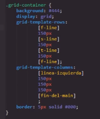
Con esta estructura se vinculan los nuevos nombres a cada línea, ya sea de columna o de fila. Es importante encerrar los nombres en corchetes ("[]") y una vez hecho esto, se puede utilizar cualquiera de los nombres como si de la numeración de la línea se tratase.
Ejemplo
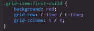
Grid Implícito y Grid Explícito
Explícito es algo que está explicado de forma clara y detallada sin dejar nada por sabido o entendido.
Implícito es algo que está incluido sin decirlo o especificarlo.
Teniendo presentes estas dos definiciones podemos hacernos a la idea de qué trata este concepto: el grid explícito son todas aquellas celdas, columnas y filas que son estructuradas y detalladas en los estilos; por otro lado, el grid implícito consta de todas aquellas celdas, filas o columnas "extra" que pueden ser añadidas por un nuevo elemento, las cuales no son especificadas o definidas por los estilos pero aun así son presentadas dentro de la cuadrícula.
Un ejemplo de esto sería que se estructure en CSS una cuadrícula con 3 columnas y 3 filas (generando 9 celdas); ese es el grid explícito. Sin embargo, si en el código HTML existen dos elementos más dentro del contenedor, estos elementos no definidos son el grid implícito.
Para trabajar con el grid implícito existen tres (3) propiedades, las cuales son las siguientes:
Grid-auto-rows
-
El funcionamiento de esta propiedad es muy similar a grid-template-rows, con la diferencia de que esta se aplica específicamente para el grid implícito y no define la cantidad de filas que serán creadas, sino que define las dimensiones de las mismas.
Por defecto, grid trata al grid implícito como filas. Para definir las dimensiones de estas se hace lo siguiente:
Sin Aplicar la propiedad
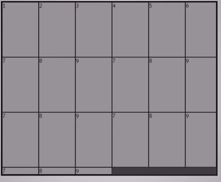
Código
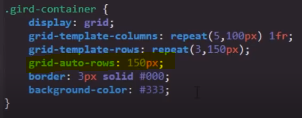
En esta propiedad no es necesario declarar un valor para cada celda por separado; se define un único valor que se aplicará a todo el grid implícito. Este código declara: "el grid implícito tendrá 150px".
Resultado
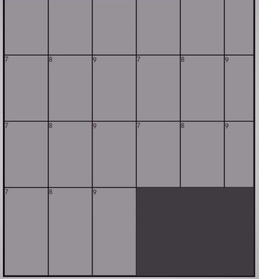
Nota: la propiedad grid-auto-rows no surte ningún efecto si el grid implícito está ubicado como columnas.
Nota: las filas implícitas también pueden poseer la medida fr.
Grid-auto-flow
-
A su vez también es posible modificar la orientación por defecto del grid implícito; esa es la función de esta propiedad, para lo cual cuenta con el valor column, el cual indica que el grid implícito sea tratado como columna en vez de como fila.
Grid-auto-flow también cuenta con otro uso y es el de rellenar cualquier espacio vacío que se genere dentro de la grilla. Esto puede suceder a raíz de las dimensiones que se les asigne a celdas continuas; si por algún motivo a una de las celdas se le asigna un Grid Template que la fuerce a reubicarse para poder cumplir con las indicaciones, se generarán espacios vacíos.
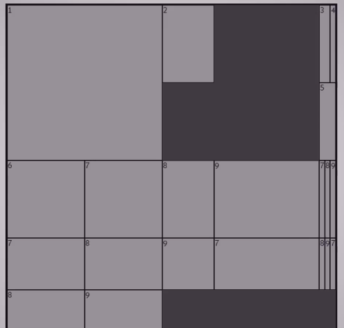
Para rellenar estos espacios vacíos se utiliza la propiedad auto-flow con el valor "dense" de la siguiente forma:
Código
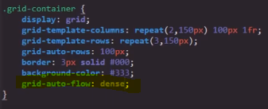
Resultado
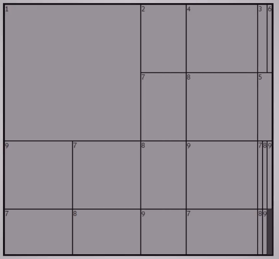
Grid-auto-columns
-
El funcionamiento de esta propiedad es muy similar a grid-template-columns, con la diferencia de que esta se aplica específicamente para el grid implícito y define las dimensiones de las nuevas columnas.
Por defecto grid trata al grid implícito como filas, por lo que esta propiedad debe ser usada en conjunto con grid-auto-flow: column; de la siguiente forma:
Código
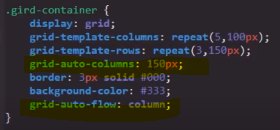
Al igual que en grid-auto-rows, en esta propiedad no es necesario declarar un valor para cada celda por separado, ya que se define un único valor que se aplicará a todo el grid implícito.
Resultado
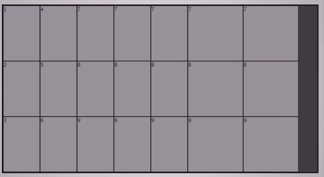
Nota: la propiedad grid-auto-columns no surte ningún efecto si el grid implícito está ubicado como filas.
Nota: las columnas implícitas también pueden poseer la medida fr.
Grid Dinámico
Es posible el definir la grilla de modo que el número de filas y columnas se ajuste a las dimensiones del dispositivo de forma dinámica, para esto se utilizan las siguientes propiedades
Como ya se ha mencionado anteriormente grid-template es la propiedad que define la cantidad de filas y columnas junto con sus respectivas dimensiones, por lo cual acepta múltiples formatos de medidas, entre los cuales se encuentra fr el cual es un valor exclusivo de los elementos grid, cuando una fila o columna es definida con este valor no solo se asignará unas dimensiones base, sino que a su vez esta se adaptará al espacio disponible en pantalla, por lo tanto permite que la tabla se ajuste hasta cierto punto a las dimensiones de la pantalla.
Min-content y Max-Content
-
En los elementos grid el contenido se ajusta automáticamente a las dimensiones de sus respectivas celdas, sin embargo una opción también es el definir que el tamaño de la celda se ajuste en base al espacio ocupado por el contenido, esto se logra de igual modo con las propiedades grid-template-columns y grid-template-rows pero en esta ocasión con los valores:
-
min-content: Define que las dimensiones de la celda serán iguales al menor espacio posible que pueda ocupar el contenido de la celda de la siguiente forma:
Código
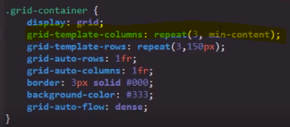
Resultado
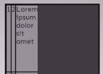
-
max-content: Define que las dimensiones de la celda serán iguales al mayor espacio posible que pueda ocupar el contenido de la celda de la siguiente forma:
Código
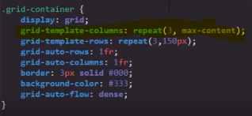
Resultado
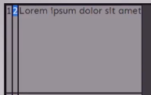
Nota: Realmente es raro llegar a utilizar el valor max-content, la mayoría de las ocasiones se utiliza únicamente min-content.
Minmax
-
Se trata de un valor de grid-template-columns o grid-template-rows que en sí es la combinación de min-content y de max-content, este valor es capaz de definir el valor mínimo y máximo que podrán adoptar las filas y columnas, su estructura es la siguiente:
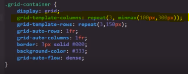
Nota: min-content y max-content pueden definirse como los valores mínimo y máximo respectivamente en "minmax" como si de cualquier otro tipo de medida se tratase.
Auto-fill
-
Esta propiedad permite que la cantidad de filas y columnas de la grilla se modifiquen dinámicamente en base a las dimensiones de la pantalla, es decir el efecto de esta propiedad no es que las dimensiones de las celdas cambien, en vez de eso reorganiza las celdas ya sea ubicándolas en fila o columna según el espacio disponible en pantalla.
Por lo tanto esta propiedad permite que en pantallas anchas la grilla se ensanche poseyendo numerosas columnas y pocas filas, del mismo modo en pantallas estrechas la grilla se afina pasando a poseer numerosas filas y pocas columnas.
Esta propiedad se utiliza como valor de las propiedades grid-template-columns y grid-template-rows, a su vez se utiliza con las propiedades min-content, max-content y minmax de la siguiente forma:
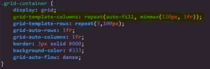
Este ejemplo indica lo siguiente: "repite la creación de columnas auto-fill con un valor mínimo de 120px y un valor máximo adaptable al espacio disponible (1fr)", de este modo se crea una celda por cada "div" establecido en el documento HTML, y si el espacio es suficiente ubica todas las celdas posibles como columnas, y si el espacio no es suficiente para colocar más celdas distribúyelo entre todas (esto por el valor 1fr).
Auto-fit
-
Esta propiedad es muy similar a auto-fill tanto en funcionamiento como en empleación en el código
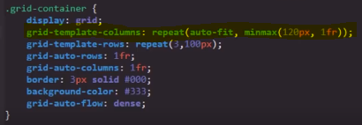
La diferencia solo se evidencia en los casos en los que exista espacio disponible en el contenedor grid, ya que esta propiedad una vez todos los elementos se ubicaron en una línea esta permite escalarlos aumentando sus dimensiones, mientras que en su lugar auto-fill no permite que los elementos se escalen, sino que en caso de que exista espacio disponible esta genera celdas invisibles para ocupar ese lugar, evitando que las celdas visibles dispongan de ese espacio
Auto-fit
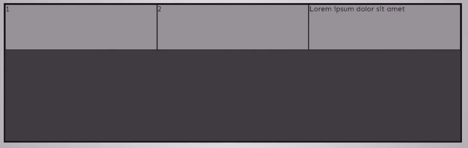
Auto-Fill
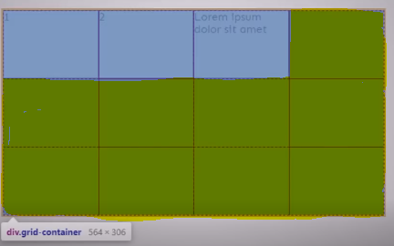
En este ejemplo se usó una herramienta de google que permite ver las celdas invisibles generadas por auto-fill.
Alineación y control de flujo
La alineación en los elementos grid se diferencia de la de flex, ya que en vez de tratarse de una alineación total del contenido, se trata de una alineación dentro de cada celda, por lo tanto se podría decir que cada celda pasa a ser un "flex-container".
Debido a esto la alineación de las grillas están constituidas por dos partes en función de los dos tipo de elementos que almacena, por un lado se tiene la alineación de las celdas organizadas en filas y columnas que conforman la grilla, y por otro lado tenemos la alineación del contenido de las celdas, por lo tanto existen propiedades para controlar el cómo se justifican las celdas y otras para definir el cómo se justifica el contenido de estas.
Alineación del contenido
Estas propiedades únicamente definen la alineación del contenido de las celdas:
Justify-items
-
Esta propiedad define la alineación del contenido de forma horizontal, es decir el si se encuentra centrado, a la derecha o izquierda, sus posibles valores son:
Center: Centra el contenido horizontalmente
Start: Alinea el contenido a la derecha
End: Alinea el contenido a la izquierda
stretch: Se trata del valor por defecto de las celdas grid, estira horizontalmente la celda para que ocupe todo su espacio designado
Nota: Los grid items no tienen ni largo ni ancho así que al aplicar otros valores que no sean stretch las dimensiones de la celda se ajustan como en la siguiente imagen:
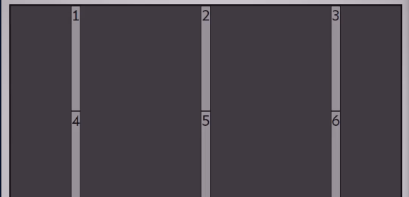
Nota: La distancia entre las celdas se debe a la propiedad grid-template.
Nota: Se puede usar padding para aumentar el tamaño de la celda.
aling-items
-
Esta propiedad define la alineación del contenido de forma vertical, es decir el si se encuentra centrado, en la parte superior o inferior, sus posibles valores son:
Center: Centra el contenido verticalmente
Start: Alinea el contenido en la parte superior
End: Alinea el contenido en la parte inferior
stretch: Se trata del valor por defecto de las celdas grid, estira verticalmente la celda para que ocupe todo su espacio designado
Nota: tal como se puede apreciar ambas propiedades cuentan con los mismos valores con las mismas funciones, solo que una los aplica en el eje vertical y la otra en el eje horizontal.
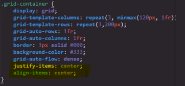
Nota: Esta es la forma correcta de centrar los items.
Nota: Las propiedades de los items no pueden recibir las propiedades flex ">Space-around", ">Space-between" ni ">Space-evenly".
Propiedades del Grid-container
Se tratan de aquellas dos propiedades que definen exclusivamente la alineación de las celdas mediante la organización de las filas y columnas:
Justify-content
-
esta propiedad permite que las columnas se ubiquen horizontalmente, es decir en el centro, en la derecha o a la izquierda, del mismo modo sus valores son:
Center: Centra las columnas horizontalmente
Start: Alinea las columnas a la derecha
End: Alinea las columnas a la izquierda
stretch: Se trata del valor por defecto de las celdas grid, estira horizontalmente la celda para que ocupe todo su espacio designado
Esta propiedad también acepta los valores flex:
Space-around: Deja la mayor cantidad de espacio horizontal posible alrededor de las columnas
Space-between: Separa las columnas horizontalmente con la mayor cantidad de espacio posible
Space-evenly: Asigna la misma distancia horizontal a todas las columnas
Aling-content
-
Esta propiedad permite que las filas se ubiquen verticalmente, es decir que lo hagan en el centro, en la parte superior o inferior del contenedor, sus valores posibles son:
Center: Centra las filas verticalmente
Start: Alinea las filas en la parte superior
End: Alinea las filas en la parte inferior
stretch: Se trata del valor por defecto de las celdas grid, estira verticalmente la celda para que ocupe todo su espacio designado
Esta propiedad también acepta los valores flex:
Space-around: Deja la mayor cantidad de espacio vertical posible alrededor de las columnas
Space-between: Separa las columnas verticalmente con la mayor cantidad de espacio posible
Space-evenly: Asigna la misma distancia a todas las columnas verticalmente
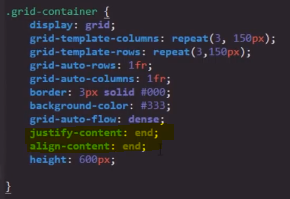
Nota: para que estas propiedades se evidencien debe de haber espacio disponible en el contenedor, para que de ese modo las filas y columnas puedan desplazarse.
Nota: Es perfectamente correcto el aplicar las cuatro propiedades a la vez, ya que de ese modo se estaría definiendo la alineación tanto de las filas y columnas como de su contenido.
Notas: Todas estas propiedades también aceptan los valores "flex-start" y "flex-end", ya que se comportan como contenedores flex, sin embargo nada cambia al emplear estos valores.
Alineación individual de celdas
También existen propiedades que se enfocan en definir la alineación de una única celda en específico, el funcionamiento de estas propiedades es muy similar al de cualquiera de las anteriores propiedades de alineación, con la diferencia de que estas propiedades se aplican a la celda en individual y no a los conjuntos de celdas, estas propiedades son:
Aling-self
-
Esta propiedad define la alineación vertical de la celda, sus valores son:
Center: Centra la celda verticalmente
Start: Alinea la celda en la parte superior
End: Alinea la celda en la parte inferior
stretch: Se trata del valor por defecto de las celdas grid, estira verticalmente la celda para que ocupe todo su espacio designado
Justify-self
-
Esta propiedad define la alineación horizontal de la celda, sus valores son:
Center: Centra la celda horizontalmente
Start: Alinea la celda a la derecha
End: Alinea la celda a la izquierda
stretch: Se trata del valor por defecto de las celdas grid, estira horizontalmente la celda para que ocupe todo su espacio designado
Place-self
-
Se trata simplemente de la propiedad de abreviatura de justify-self y de align-self, por lo que su propósito es cumplir con exactamente la misma función que estas pero en una sola declaración, esta propiedad recibe dos datos a la vez, el primero se trata del align-self (alineación vertical) mientras que el segundo se refiere a justify-self (alineación horizontal), de la siguiente forma:
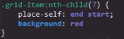
Del mismo modo ya que ambas propiedades aceptan los mismos valores también se puede simplificar aún más ingresando un único valor, en este caso ese valor se aplicará a ambas propiedades, como en el siguiente ejemplo:
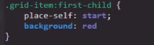
Nota: Su uso solo es realmente útil en los casos en los que se desee modificar ambas propiedades a la vez.
order
-
Esta propiedad se asemeja mucho al z-index, propiedad que define qué elemento se visualizará por encima o por debajo cuando estos se sobreponen entre sí, esto lo hace en base al valor numérico que se le asigna a cada elemento, en el cual el más grande se ubica por encima de los otros.
Por su lado order lo que hace es definir en qué orden se ubican los elementos, es decir esta propiedad define el si los items se ubican de primero, segundo, cuarto, último etc, en base al valor numérico que se le asigne a cada item al igual que en la propiedad z-index. En esta propiedad el item con el menor valor se ubica en el inicio, mientras que el item con el mayor valor lo hace al último.
Código
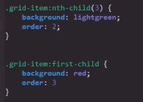
Resultado
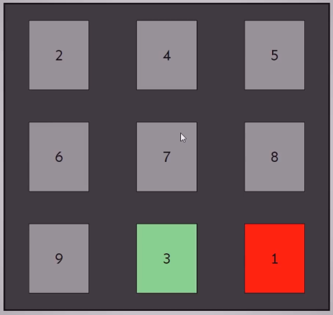
Grid Areas
Las Grid Areas son una forma de estructurar los elementos grid alternativa a grid-template-columns y a grid-template-rows, ya que de esta forma las casillas de la grilla son declaradas de una forma diferente, para esto se utiliza la propiedad grid-template-areas, esta dinámica consiste en otorgarle un nombre a cada grupo de casillas definiendo a cada una de estas con ese nombre de la siguiente forma:
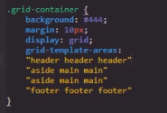
Cada uso del respectivo nombre del grupo genera una casilla, en este ejemplo como nombre de los grupos se utiliza las partes básicas de una página web, por lo tanto en esta estructura se están generando una fila perteneciente al área "header" conformada por tres casillas, seguido a esto se creó un área llamada "aside" conformada por una columna de dos casillas, seguido de una tercera área llamada "main" conformada por cuatro casillas ocupando dos columnas y dos filas, y por último un grupo llamado "footer" conformado por una fila de tres casillas, de esta forma es como se declara la generación de las casillas utilizando las áreas.
Lo siguiente es asignar las áreas generadas a cada uno de los elementos HTML:
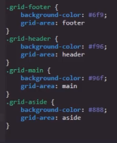
De este modo los elementos proceden a ubicarse en el espacio designado para cada una de las casillas de sus respectivas áreas.
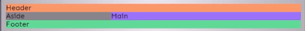
Como se puede ver los elementos se ubicaron según la estructura de áreas definida anteriormente, sin embargo esto es todo, esta técnica únicamente consiste en generar las casillas, para asignarles medidas y seguir trabajando con la grilla se utilizan mecanismos normales, por ejemplo:
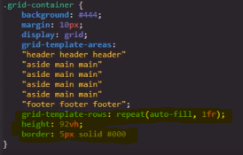
En este ejemplo aparte de aumentar el tamaño de las áreas generando más celdas, se define el tamaño de las celdas ya creadas utilizando grid-template-columns y sus respectivas funciones, así como también las dimensiones del contenedor y un borde.
De ese modo es como se pueden generar celdas utilizando las áreas grid, si bien no ofrece mucho más que eso es una alternativa que puede llegar a resultar útil al estructurar la grilla.
Nota: Lo ideal sería darle al "header" y al "footer" medidas fijas
Nota: Al igual que con el uso de grid-template-columns y grid-template-rows con las áreas también es posible el asignarle nombres a las líneas, esto se puede hacer de la misma forma que se hace con grid-template-columns y grid-template-rows.